클라이언트 구조
Next.js 16 App Router 기반 사용자 웹앱입니다. 27개 페이지가 하나의 공통 셸 위에서 동작합니다.
공통 셸은 바깥에서 안쪽으로 ThemeProvider → QueryProvider →
AuthProvider → Navbar + Footer 순서로 감쌉니다.
테마는 인증보다 바깥에 있어야 로그인 화면에서도 테마가 먼저 적용됩니다.
lib/guest-routes.ts 에 허용 경로를
목록으로 두고, 이 판정 로직에는 단위 테스트를 붙였습니다(오픈 리다이렉트 방지 포함).
무엇을 왜 썼는가
| 기술 | 역할 | 선택 이유 |
|---|---|---|
| Next.js 16 App Router | 라우팅 · 렌더링 | 폴더 구조가 곧 URL 구조. /community/[id] 같은 상세 경로가 자연스럽게 나옵니다. 서버 컴포넌트로 초기 로드를 줄일 여지도 남습니다. |
| React 19 | UI | useSyncExternalStore 로 전역 스토어를 라이브러리 없이 만들 수 있습니다. |
| TypeScript | 타입 | 백엔드 응답 타입을 types/ 에 정의해 API 변경 시 프론트가 먼저 깨집니다. |
| Tailwind CSS v4 | 스타일 | 클래스가 마크업 옆에 있어 컴포넌트를 옮길 때 스타일이 따라옵니다. 팔레트는 CSS 변수로 분리했습니다. |
| TanStack Query | 서버 상태 | 목록 화면의 중복 페치·캐시 무효화를 정리했습니다. 전면 도입이 아니라 이득이 확실한 5개 화면에만 적용했습니다. |
| Playwright | E2E | WebSocket 실시간 메시지처럼 단위 테스트로 확인할 수 없는 흐름을 검증합니다. |
useEffect 안의 setState 직접 호출이
react-hooks/set-state-in-effect 에러입니다. 저장소 전체에서
queueMicrotask(() => setX(...)) 로 감싸는 방식으로 통일하고 그 규약을 문서에 적었습니다.
같은 문제를 각자 다른 방식으로 우회하면 나중에 어느 쪽이 의도된 것인지 알 수 없습니다.
27개 화면
| 경로 | 화면 | 인증 |
|---|---|---|
/ | 쇼츠 세로 스냅 피드 — 좋아요/싫어요, 댓글 패널, 공유 | 열람 자유 |
/search | 통합 검색 — 쇼츠·롱폼·커뮤니티·유저 4개 도메인 동시 | 열람 자유 |
/following | 팔로잉 피드 — 팔로우한 크리에이터의 쇼츠 모아보기 | 필요 |
/profile/[id] | 프로필 — 탭·정렬·그리드·재생목록 | 열람 자유 |
/profile/[id]/followers/profile/[id]/following | 팔로워 · 팔로잉 목록 | 열람 자유 |
/playlists/[id] | 재생목록 상세 — 영상 추가·제거 | 열람 자유 |
/upload | 쇼츠 업로드 — 실파일(영상 100MB · 이미지 8MB) | 필요 |
/longform 외 2개 | 롱폼 목록 · 작성 · 상세 | 작성만 필요 |
/community 외 2개 | 커뮤니티 목록 · 작성 · 상세 | 작성만 필요 |
/messages, /messages/[id] | 1:1 대화 — WebSocket 실시간 송수신 | 필요 |
/notifications 외 1개 | 알림 — SSE 실시간, 읽음/삭제·벌크 처리·수신 토글 | 필요 |
/chatbot, /chatbot/[id] | AI 챗봇 워크스페이스 — 3모델, 첨부, 마크다운 | 게스트는 Locals만 |
/support, /support/[id] | 고객센터 — FAQ + 문의 작성·목록·상세 | 문의는 필요 |
/login, /register | 로그인 · 회원가입 | — |
/terms, /privacy, /business | 이용약관 · 개인정보처리방침 · 사업자 정보확인 | 열람 자유 |
눈여겨볼 구현
댓글 — 1단계 스레드
comments.parent_id 로 대댓글을 만들되 1단계까지만 허용합니다.
2단계 이상 답글은 최상위로 평탄화합니다. 무한 중첩은 모바일 폭에서 읽을 수 없게 되고,
깊이 제한을 UI가 아니라 데이터 정규화 단계에서 거는 편이 안전합니다.
알림 — 전역 스토어
Navbar 배지, 알림 목록, 알림 팝업 세 곳이 같은 상태를 봐야 합니다.
useSyncExternalStore 기반 스토어(notifications-store.ts)로 묶어
어디서 읽음 처리를 해도 나머지 둘이 즉시 따라옵니다.
업로드 — 보내기 전에 거른다
lib/media.ts 가 전송 전에 용량·형식을 검사합니다.
서버도 같은 검사를 하지만, 100MB를 다 올린 뒤 거절당하는 경험을 피하기 위한 것입니다.
클라이언트 검사는 편의이지 보안이 아니라는 전제로 서버 검사를 없애지 않았습니다.
챗봇 — 게스트와 회원의 차이
비회원은 Locals 모델만 쓸 수 있고 대화는 메모리에만 남습니다(새로고침 시 소실). 회원은 3모델 전부와 서버 DB 영속화를 씁니다. 로그인 유도를 막는 벽이 아니라 기능 차이로 드러나게 했습니다.
통신 창구를 하나로
프론트의 서버 통신은 lib/api.ts 단 하나의 모듈로 모았습니다.
40개가 넘는 메서드가 모두 ApiResult<T> 를 반환하고,
credentials: "include" 로 세션 쿠키를 실어 보냅니다.
이 모듈을 거치지 않는 fetch 는 금지가 저장소 규약입니다.
| 모듈 | 역할 |
|---|---|
api.ts | 서버 통신 단일 창구. 40+ 메서드, ApiResult<T> 반환. uploadFile 만 FormData |
media.ts | /uploads 상대 경로에 API 호스트를 붙이는 mediaUrl(), 용량·형식 검사 |
auth.ts | 인증 헬퍼 |
notifications-store.ts | useSyncExternalStore 기반 알림 전역 상태 |
guest-routes.ts | 비회원 허용 경로 목록 · 오픈 리다이렉트 방지 |
chatbot-corpus.ts | Shape 모델용 RAG 코퍼스 수집 |
chatbot-models.ts | 모델 티어 정의 (locals / vide / shape) |
chat-files.ts | 첨부 파일 → ChatbotAttachment 변환 |
content-store.ts | 포맷 유틸 2개만 잔존 (localStorage 로직은 SQLite 이관 때 제거) |
NEXT_PUBLIC_API_URL 이 비어 있으면 window.location.hostname:4000 을
자동으로 가리킵니다. 휴대폰으로 PC의 IP를 열어도 API 주소를 따로 넣을 필요가 없습니다.
다만 Workers 배포 빌드에는 반드시 명시해야 합니다.
실시간 연결
| 기능 | 연결 | 프론트 처리 |
|---|---|---|
| 알림 | SSE GET /api/notifications/stream | 수신 즉시 전역 알림 스토어에 반영 → Navbar 배지·목록·팝업이 함께 갱신 |
| 메시지 | WebSocket /ws/conversations | 스레드 화면에서 구독. 끊겨도 REST 폴백으로 전송은 계속 동작 |
상태 관리 전략
한 가지 방식으로 통일하지 않고 데이터 성격에 따라 나눴습니다.
| 종류 | 방식 | 이유 |
|---|---|---|
| 서버 목록 데이터 | TanStack Query | 롱폼·커뮤니티·팔로잉 피드·프로필·메시지. 캐시·재검증이 이득인 화면 |
| 알림 | useSyncExternalStore | 세 컴포넌트가 같은 상태를 봐야 함 |
| 테마 | useSyncExternalStore + localStorage | 리렌더 없이 즉시 반영 |
| 인증 | context/AuthContext | 앱 전역 1회 로드 |
| 쇼츠 피드 등 | 컴포넌트 로컬 useState | 낙관적 업데이트가 얽혀 있어 이전 보류 개선 예정 |
실제 동작 화면
모두 실행 중인 앱에서 Playwright로 캡처했습니다. 클릭하면 확대됩니다.
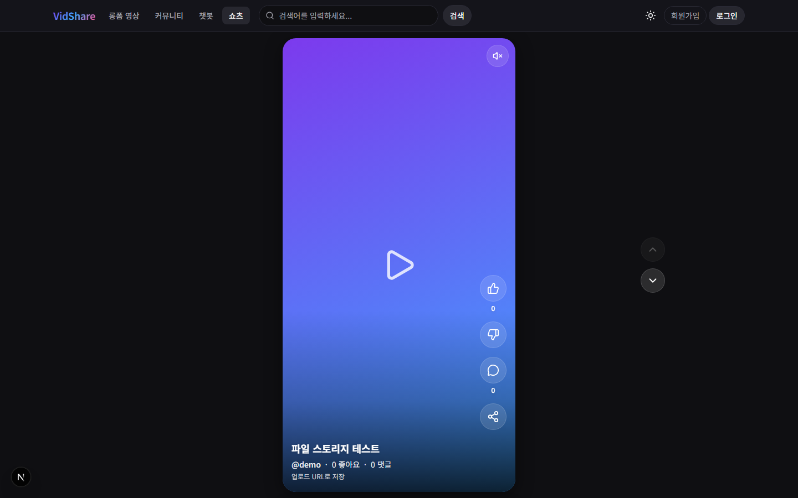
/세로 스냅 스크롤. 우측 액션 바에 좋아요·싫어요·댓글·공유. 비회원도 열람 가능.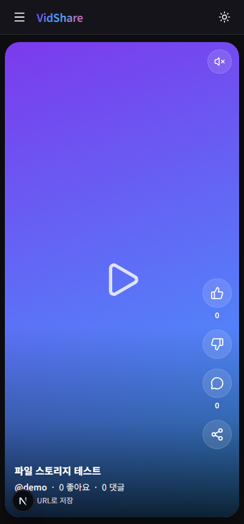
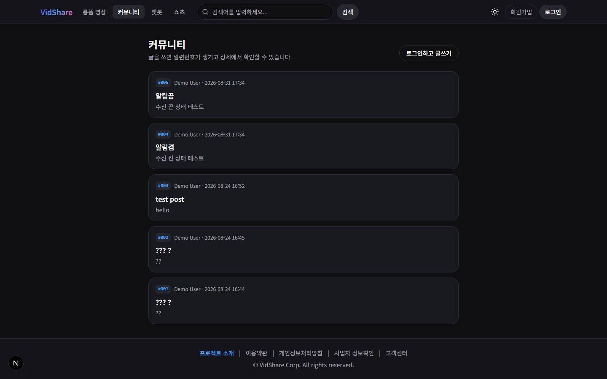
/community글마다 일련번호가 붙어 상세에서 확인할 수 있습니다.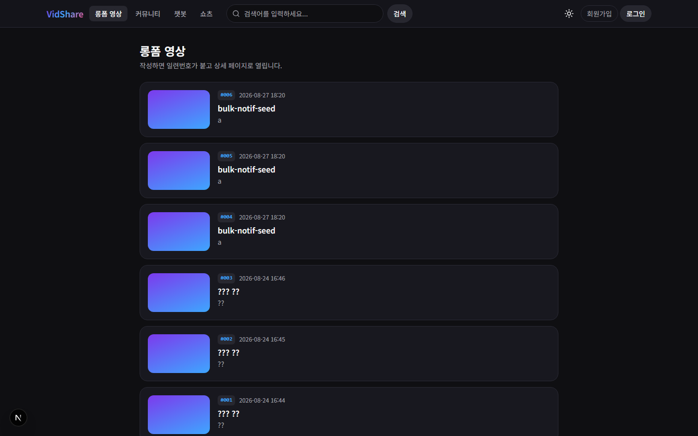
/longform긴 영상 목록. 작성은 로그인이 필요합니다.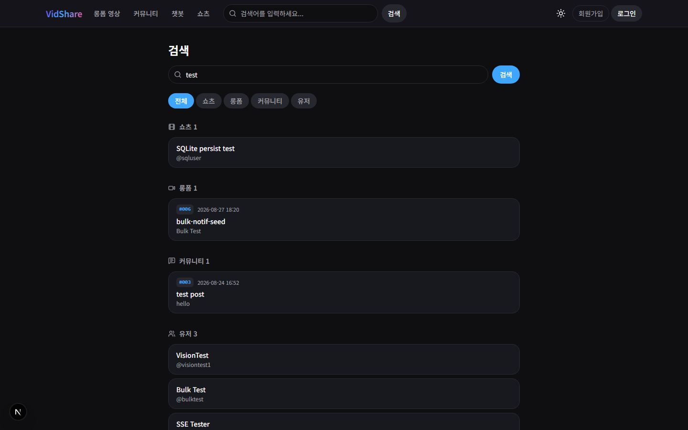
/search쇼츠·롱폼·커뮤니티·유저 네 도메인을 한 번에 조회합니다.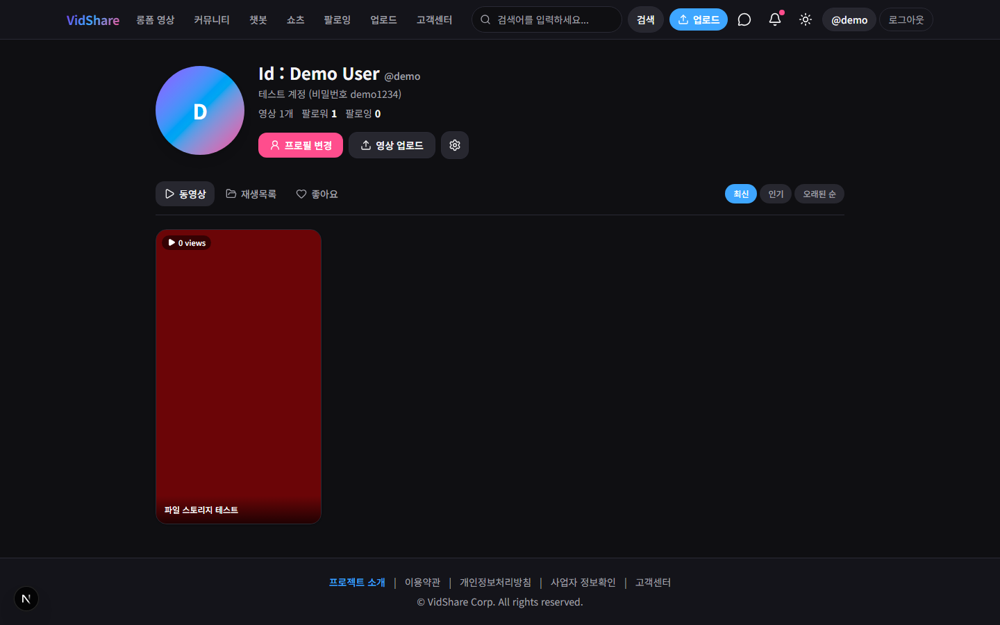
/profile/[id]탭·정렬·그리드와 팔로워/팔로잉, 재생목록.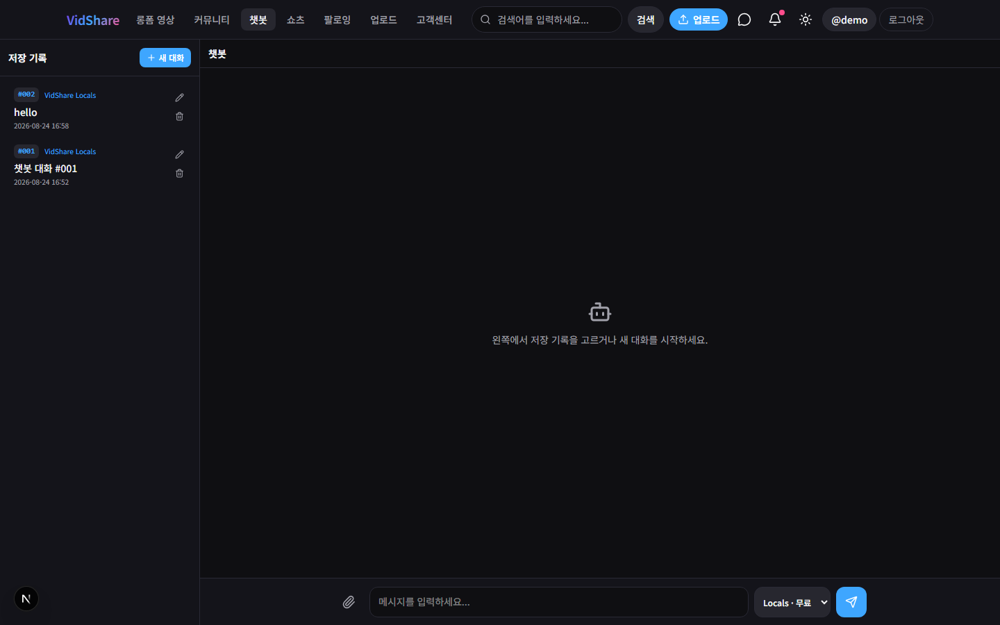
/chatbot좌측에 저장된 대화, 하단에 모델 선택과 파일 첨부.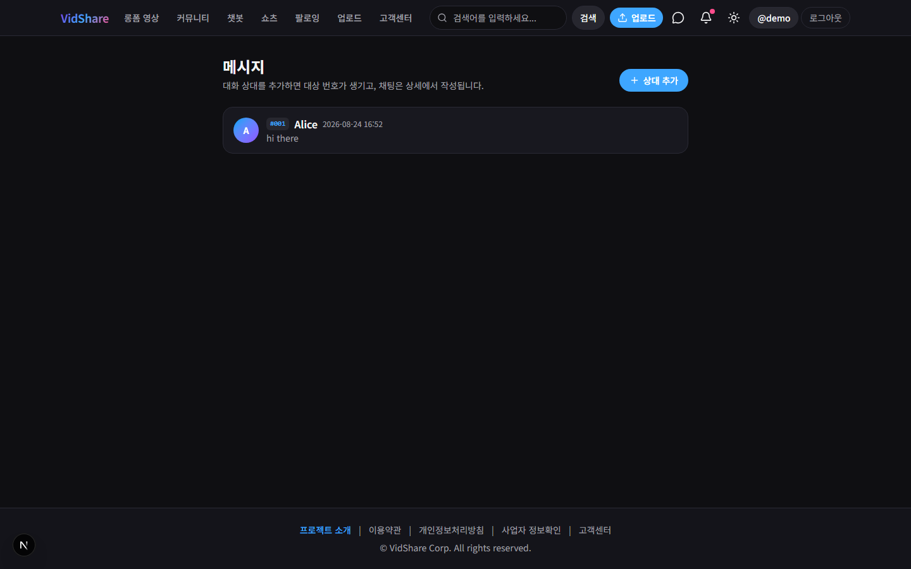
/messagesWebSocket으로 실시간 송수신하며 REST 폴백을 유지합니다.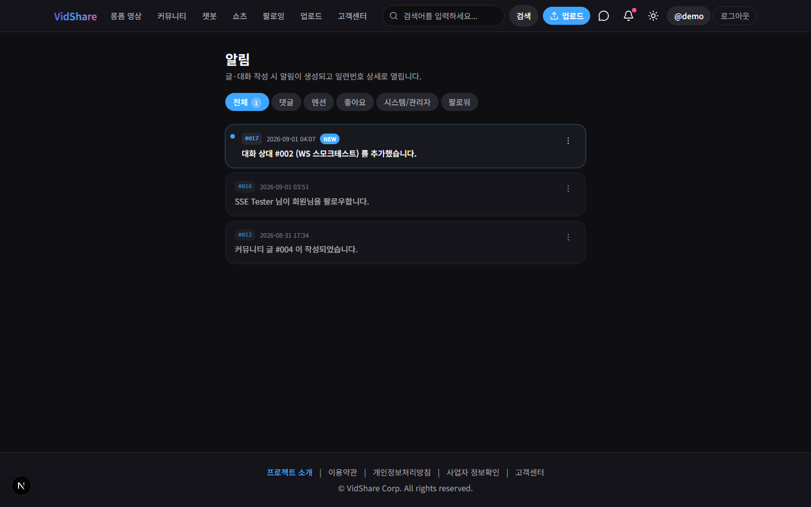
/notificationsSSE로 즉시 도착. 전체 읽음·전체 삭제는 확인 모달을 거칩니다.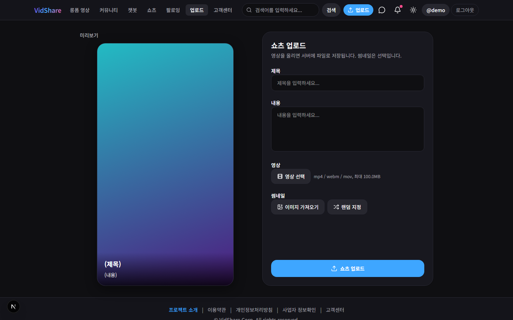
/upload전송 전에 용량·형식을 검사합니다.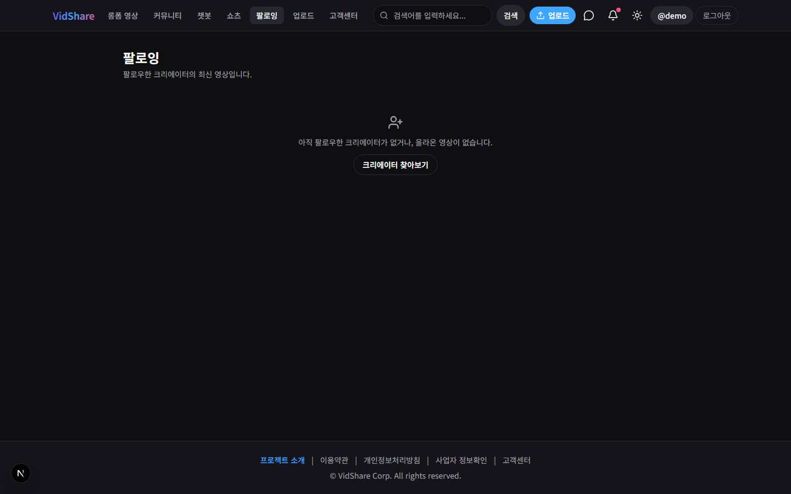
/following팔로우한 크리에이터의 쇼츠만 모아 봅니다./supportFAQ는 누구나, 문의 작성은 로그인 후.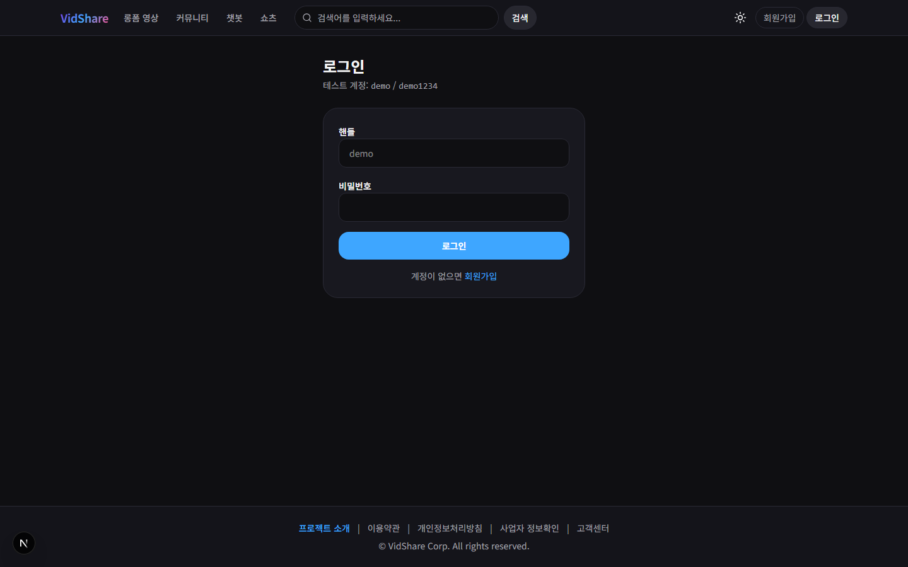
/loginbcrypt + HttpOnly 세션 쿠키.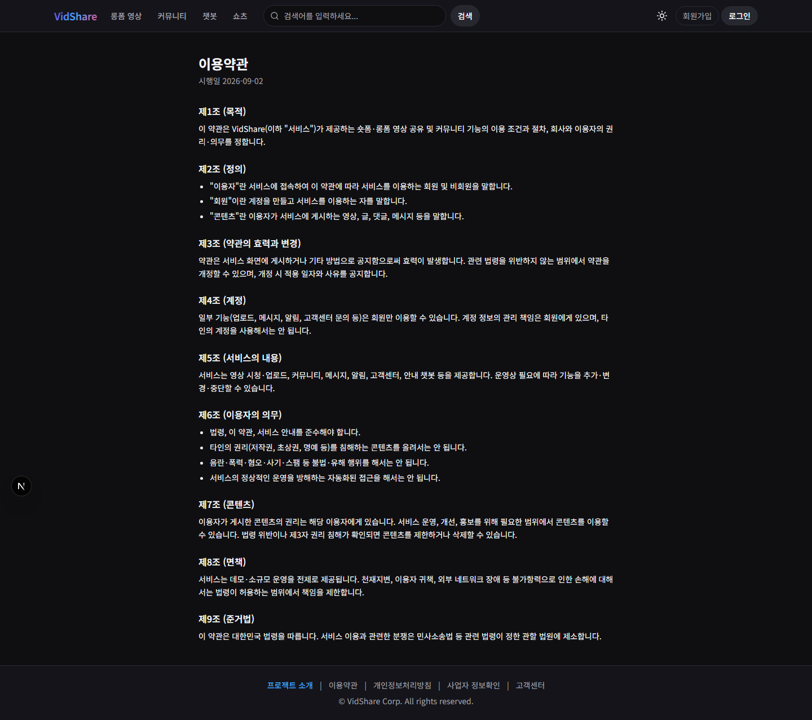
/terms약관·개인정보처리방침·사업자 정보는 LegalPage 컴포넌트를 공유합니다.색을 코드에 직접 쓰지 않는다
팔레트를 시맨틱 CSS 변수 토큰으로 정의하고, 컴포넌트에서는 토큰만 참조합니다.
라이트 모드는 html.light 에서 변수만 재정의하며 컴포넌트는 한 줄도 건드리지 않습니다.
두 앱의 색을 일부러 다르게
사용자 앱은 보라–파랑 계열(#7c3aed → #3ea6ff),
관리자 콘솔은 앰버 계열입니다. 두 사이트를 동시에 띄워 두고 작업할 때
지금 어느 쪽을 보고 있는지 즉시 구분됩니다. 운영 화면에서 실수로 사용자 데이터를
건드리는 사고를 줄이는 값싼 장치입니다.
커스텀 유틸리티
Tailwind 클래스로 매번 조합하기엔 반복이 심한 패턴만 유틸리티로 승격했습니다.
shorts-snap 은 세로 스냅 스크롤, glass-btn 은 피드 위 반투명 버튼입니다.
아직 못 한 것
알고 미룬 것들입니다. 각각 왜 미뤘고 무엇을 할지 함께 적었습니다.
| 항목 | 현재 상태 | 계획 | 우선도 |
|---|---|---|---|
| 서버 상태 일원화 | ShortsFeed 등은 아직 useState + useEffect. 낙관적 업데이트(좋아요 즉시 반영)가 얽혀 있어 이전이 단순 치환이 아님 | 낙관적 업데이트를 Query mutation의 onMutate/onError 롤백으로 이전 | 높음 |
| 컴포넌트 테스트 | 순수 함수 32건뿐. 렌더링 로직은 E2E 8건에만 의존 | Testing Library 도입, 핵심 컴포넌트부터 | 높음 |
| 접근성 | 전면 점검 미실시. 키보드 내비게이션·ARIA·색 대비를 측정한 적 없음 | 기준선 감사 후 우선순위 결정 | 중간 |
| 성능 | 측정하지 않음. 번들 크기·LCP 수치를 모름 | Lighthouse 기준선 → 이미지·번들 최적화 | 중간 |
| 페이지네이션 | 검색·팔로워 목록이 전량 반환. 데이터가 적어 드러나지 않을 뿐 | 커서 기반 페이징 (백엔드와 동시 작업) | 중간 |
lib/mock-data.ts | 약 65줄로 줄었지만 시드/폴백 용도로 잔존 | 완전 제거 | 낮음 |
해결한 문제 — 크로스 도메인에서 로그인이 안 되던 일
증상 — Cloudflare Workers에 프론트를 올리자 로컬에서 되던 로그인이 실패했습니다.
원인 — 세션 쿠키가 SameSite=Lax 였습니다. 프론트와 API의 도메인이 다르면
브라우저가 쿠키를 싣지 않습니다. 개발에서는 둘 다 localhost 라 드러나지 않았습니다.
해결 — COOKIE_DOMAIN / COOKIE_SAMESITE 를 환경 변수로 빼고,
NODE_ENV=production 이면 CORS를 화이트리스트로만 열도록 바꿨습니다.
개발 편의(사설망 전체 허용)와 운영 안전을 환경으로 갈랐습니다.
남긴 것 — 배포 전 필수 확인 항목으로 문서에 정리하고 "지금 설정 그대로 올리면 로그인이 되지 않는다"고 명시했습니다. 나중에 같은 함정에 빠지는 것을 막는 건 코드가 아니라 문장이었습니다.
다음에 가고 싶은 방향
무한 스크롤 + 가상 스크롤
지금은 전량 렌더입니다. 피드가 수백 개가 되면 DOM 노드 수가 문제가 됩니다. 커서 페이징과 함께 가야 합니다.
PWA · 오프라인 캐시
숏폼 소비는 모바일이 주 무대입니다. 설치형 경험과 오프라인 목록 캐시로 체감을 올릴 여지가 큽니다.
시청 지표 기반 정렬
현재 피드는 최신순입니다. 시청 완료율을 수집하면 추천까지 가지 않아도 정렬을 개선할 수 있습니다.
다국어 (i18n)
문자열이 컴포넌트에 하드코딩되어 있습니다. 먼저 추출부터 해야 합니다.